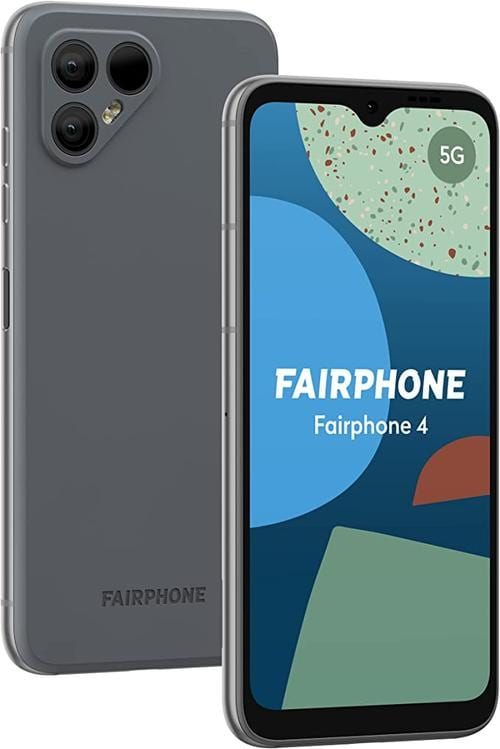

Fairphone 4

模块化可维修设计，五年质保的环保主义手机。
客观评测
Fairphone 4 用骁龙 750G、6.3 英寸 OLED 这套中端配置，售价却对标旗舰，单看性价比毫无竞争力。它的价值全在别处：整机由可拆卸模块组成，用户拧几颗螺丝就能更换屏幕、电池或摄像头，官方承诺提供备件到 2027 年以后；外壳使用再生材料，矿物采购遵循公平贸易认证。系统更新承诺五年，是安卓阵营里最长寿的承诺之一。
主观点评
握着 225g 重的 Fairphone 4，你能感到一种笨拙的诚意。它不追求轻薄与性能，而是认真回答一个问题：一台手机可以对人和地球更友善吗？每次拆开后盖换电池，都像一次小小的宣言。它注定小众，却让'修 Right to Repair'从口号变成可以下单的商品，这份意义配得上掌声。
优点与不足
- 屏幕、电池、摄像头均可自行拆换，官方长期供应备件
- 五年系统更新承诺远超绝大多数安卓厂商
- 供应链透明，是目前最负责任的智能手机之一
- 骁龙 750G 性能对不起三千元价位
- 机身厚重，IP54 防护等级偏低
参数规格
| 屏幕 | 6.3 英寸 OLED，2340×1080 |
|---|---|
| 处理器 | 高通骁龙 750G |
| 内存 | 6GB/8GB RAM |
| 存储 | 128GB/256GB，支持 microSD |
| 摄像头 | 后置 4800 万像素双摄（含深度镜头），前置 2500 万像素 |
| 电池 | 3900mAh，可自行更换 |
| 系统 | Android（承诺 5 年系统更新） |
| 防护 | IP54 防泼溅 |
| 维修 | 模块化设计，官方提供备件与维修指南 |
| 环保 | 采用再生塑料与公平贸易矿物 |
| 重量 | 约 225g |